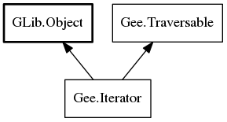

Gee.Iterator – gee-0.8 Reference Manual
Packages
gee-0.8
Gee
Iterator
read_only
valid
concat
unfold
@get
has_next
next
remove
Iterator
Object Hierarchy:

Description:
public
interface
Iterator
<
G
> :
Object
,
Traversable
<
G
>
All known sub-interfaces:
BidirIterator
ListIterator
Namespace:
Gee
Package:
gee-0.8
Content:
Properties:
public
abstract
bool
read_only
{
get
; }
public
abstract
bool
valid
{
get
; }
Static methods:
public
static
Iterator
<
G
>
concat
<
G
> (
Iterator
<
Iterator
<
G
>> iters)
public
static
Iterator
<
A
>
unfold
<
A
> (
owned
UnfoldFunc
<
A
> f,
owned
Lazy
<
G
>? current =
null
)
Methods:
public
abstract
G
@get
()
public
abstract
bool
has_next
()
public
abstract
bool
next
()
public
abstract
void
remove
()
Inherited Members:
All known members inherited from class GLib.Object
@new
newv
new_valist
get_type
get_class
@ref
unref
ref_sink
weak_ref
weak_unref
add_weak_pointer
remove_weak_pointer
@get
@set
get_property
set_property
get_data
set_data
set_data_full
steal_data
get_qdata
set_qdata
set_qdata_full
steal_qdata
freeze_notify
thaw_notify
dispose
constructed
notify_property
connect
disconnect
add_toggle_ref
remove_toggle_ref
bind_property
notify
ref_count
All known members inherited from interface Gee.Traversable
element_type
chop
filter
fold
@foreach
map
scan
stream